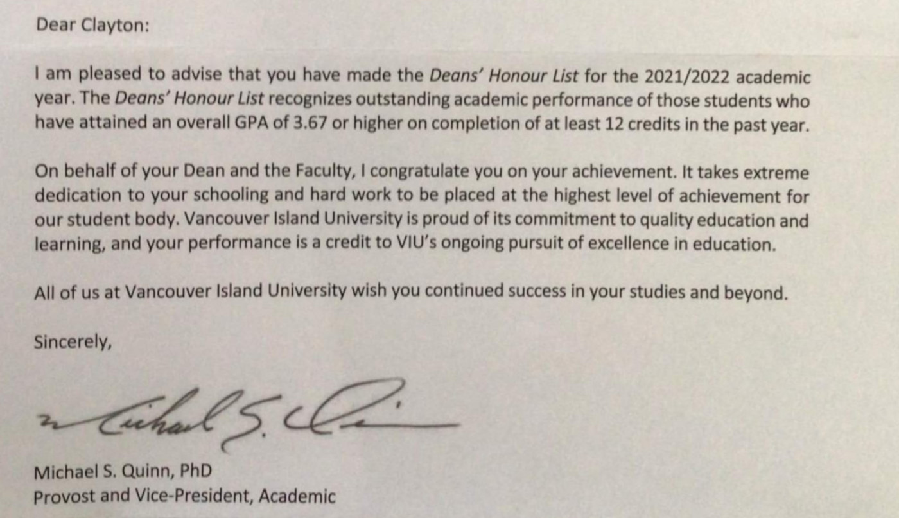

Resume
Here, you can view or download a PDF copy of my resume and gain deeper insight into my professional experience.
Objective
I’m looking to secure a permanent, full-time career in the computer graphics industry as a graphics producer or software engineer; developing tools to generate artistic assets alongside other artists and developers in an online-friendly agile iterative work environment and fulfill my lifelong dream of creating tools for artists.
Education & Achievements
-
VIU Bachelors of Science (double majored in computing science & mathematics).
-
VIU Fundamentals of Engineering certification.
-
VIU Proficiency in Language and Culture Program (Japanese 日本語 Concentration) certification.
-
Graduated from Ballenas Secondary School in 2014.
Employment History
-
ML56
2022/08/24 - 2024/06/15
I worked as a VR developer for ML56 touching on all aspects of the product line including but not limited to developing VR training scenarios, storyboards, front-end interfaces, web applications, server side databases, client-side file management, developer tools, quality assurance, in-editor applications, special effects, and more. My focus was within the Unity and Unreal game engines, Blender for modeling, and utilized other tools such as Confluence, Jira, Slack, GitHub, Perforce, and Google Suite. The company dissolved after funds depleted.
Reference: Dror Nir: The email will display shortly.
-
Vancouver Island University
2018/09/14 - 2019/04/10
I helped tutor the computing science (and mathematics) students in various topics such as programming in C, C++, machine code (M68HC11, SSBC, Marie), HTML, CSS, Javascript, PHP, Bash; and in high level concepts such as computation theory, data structures & algorithms, databases, graphics (rasterizations, phong-reflection models, L-systems, OpenGL library), process schedulers, multi-threading, linux shells, compilers, web development, calculus, linear algebra, and in discrete mathematics such as combinatorics, group theory, number theory, real analysis, numerical analysis, and topology.
Reference: Dr. Gara Pruesse: The email will display shortly.
-
Max's Mushrooms
2012/08/04 - 2022/08/20
I contacted customers from a call list, negotiated prices, and carefully documented their orders. I loaded the company vehicle with various pallets of produce in a well organized and logical fashion for ease of delivery, optimized capacity, and careful quality control. We traveled as far as Chilliwack to serve the people of Port Alberni, Victoria, and everywhere in between.
Reference: Max Seelenmayer: The email will display shortly.
-
French Creek House
2013/05/31 - 2022/08/31
I helped prepare various meals for customers on the line, prepared food, served in keeping an organized and clean workplace for both the kitchen and bar, as well as dishwashed when needed. I helped serve the upstairs kitchen for banquets.
Reference: Discontinued.
